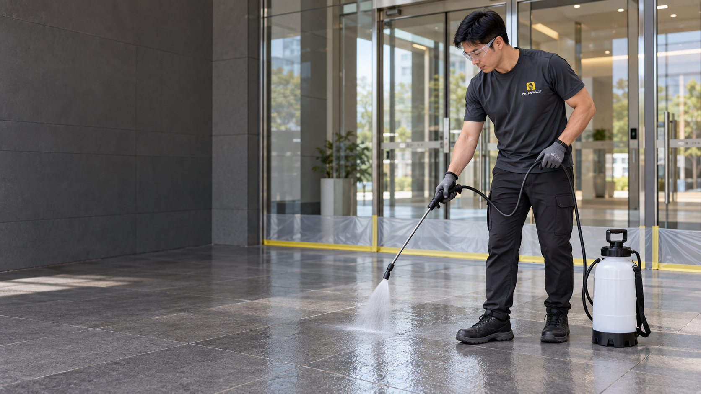
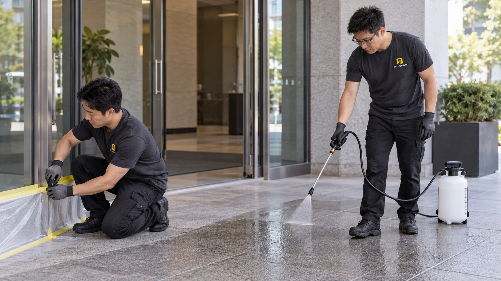

식당 · 주방 · 호텔
직원과 손님이 오가는
젖은 동선부터.
조리대 앞, 세척 구역, 배식 통로

공정 설명용 제작 이미지시공 효과
젖은 바닥의 미끄럼 저항을
제품 시험자료로 확인합니다.
수치가 오르는 가상 계측기나 합성 비교 영상을 만들지 않습니다. 실제 영상이 들어오면 위 한 프레임에서 전후를 동시에 보여주고 사용자가 재생합니다. 현재 화면은 구도 확인용 자리입니다.
계약 전, 무료 현장 확인
우리 바닥에 직접 시공한 샘플로
효과와 외관을 확인한 뒤 결정하세요.
재질과 미끄러운 구역 확인
우리 바닥에 실제로 적용
시공 범위와 일정 상담
시공이 필요한 공간
식당 · 주방 · 호텔
조리대 앞, 세척 구역, 배식 통로

관공서 · 기업 · 학교
현관, 공용 복도, 화장실 앞

수영장 · 유치원 · 요양원 · 가정
욕실, 샤워실, 세면대 주변
고령자 낙상 신고 중
욕실·화장실에서 발생한 사고
공사 부담을 줄이는 방식
적용 가능한 기존 타일·석재에 직접 시공합니다.
기존 바닥 표면을 처리하는 방식.
추가 피막이나 접착 경계가 생기지 않습니다.
별도 층을 더하는 방식
기존 표면을 처리하는 방식
미세 표면 식각 공법
바닥 표면에 미세한 변화를 만들어
젖은 상태의 미끄럼 저항을 높입니다.
표면을 처리코팅층을 덧씌우지 않는 식각 방식
재질에 맞게바닥과 마감에 따른 작업 조건 설정
샘플로 확인효과와 외관을 함께 비교
인테리어와 외관
원래 바닥의 외관도 샘플 시공에서 함께 확인합니다.
외관 비교 촬영본 배치 영역 · 현재 도식은 실제 전후 결과가 아닙니다.
닥터 논슬립의 현장 관리
같은 약제도 바닥에 맞게.
작은 구역에서 적용 조건을 확인합니다.
표면 상태에 맞는 세척으로
약제가 작용할 바닥을 준비합니다.
구역을 나눠 도포하고
재질에 맞는 반응 조건을 관리합니다.
반응 후 마무리 세척과 회수.
완료 상태와 이용 시점을 안내합니다.
공정 이해용 도구 도해 · 실제 장비 모델 및 보유 장비를 나타내지 않습니다.
약제 안전성
사람이 매일 사용하는 바닥.
효과뿐 아니라 약제의 시험자료도 확인합니다.
시험성적서 확인
시험성적서 확인
시험성적서 확인
공개용 성적서 발췌본 배치 예정
공법 적용 사례
제공받은 현장 자료를 공간·구역별로 소개합니다.
현관·복도 / 타일
식당 / 타일
수영장·샤워실
영업·시설 운영을 고려한 계획
마감 후·휴무일·구역별 작업 등
공간의 이용 방식에 맞춰 계획합니다.
작업 구역과 이용 동선을 나누어 진행합니다.

팀 작업 설명용 제작 이미지시공부터 사후관리까지
상담한 현장의 조건을 시공에 반영하고,
시공 후 관리까지 이어갑니다.
가정 욕실부터 상업·공공시설까지 상담합니다. 공간과 지역을 알려주시면 필요한 구역과 방문 일정을 안내해드립니다.
무료 현장 방문과 작은 구역의 샘플 시공을 통해 효과와 외관을 확인한 뒤 전체 시공을 결정할 수 있습니다.
면적·재질·오염 상태와 영업 일정에 맞춰 작업을 계획합니다. 완료 후 바닥 상태를 확인하고 이용 시점을 안내합니다.
물기와 기름기, 세제 찌꺼기 등 표면 오염을 정기적으로 제거해 주세요. 시공한 바닥에 맞는 청소·관리 방법을 안내합니다.
전국 무료 방문·샘플 상담
공간과 지역을 알려주세요.
바닥 사진이 있으면 더 구체적으로 상담할 수 있습니다.